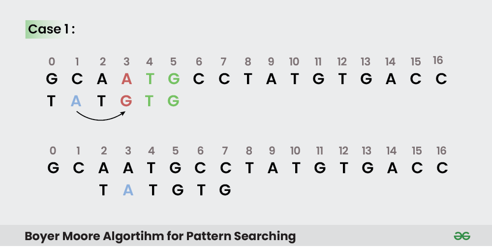
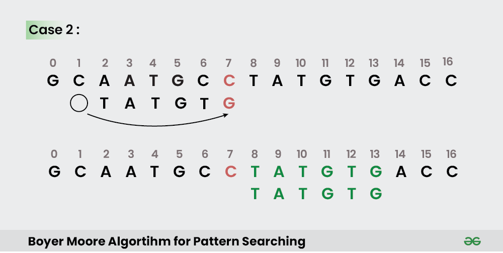
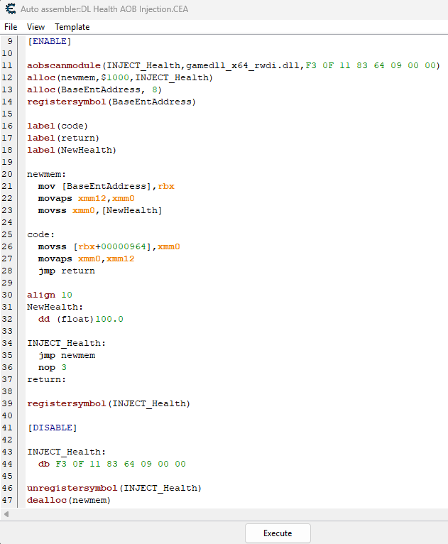
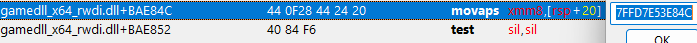
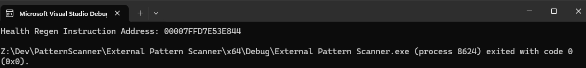
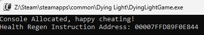

Game Vulnerability Researcher | Anti-Cheat Enthusiast
Here are some of my favorite projects I've worked on
Mar 29, 2026 | Pattern Scanning... What is it, how does it work, and how can you make your own?
Hello everyone, today we're going to be looking into how pattern scanning works in game hacking. Why would you ever need to pattern scan? Pattern scanning is useful since games frequently update. When games update, addresses change, and all the pointers you mapped out will no longer point to the correct values.
Which brings up the question of how do we get around this? That way every time the game updates we don't have to spend hours remapping all of our pointer values for our cheat. That's where pattern scanning comes in. Continue reading, and we'll dive into how pattern scanning works and how you can apply it to your game hacking toolkit!
Pattern scanning, otherwise known as signature scanning or array of bytes (AOB) scanning. Is the process of combing through regions of memory in order to find an array of bytes that match a given pattern. The memory being scanned isn't just random memory across your entire computer. It's specific memory regions such as your Game.exe module or the engine.dll that runs.
When going through the memory, you compare each byte against your pattern. If that byte matches the first byte of the pattern, you go to the second byte, then the third, etc... If it doesn't you, you continue to go through the memory and look for another byte that matches the start of your pattern until you eventually find a sequence of bytes that matches your pattern.
So what does this look like? For me atleast, this was a little hard to envision in my mind. So if you'd like a real world example, I'll have one below.
A game I am currently working on hacking is Dying Light 1. Mainly because it has no anti-cheat (Outside of VAC if you play online and have the VAC setting enabled). It's a game I've 100%'d and enjoyed a lot in the past so I wanted to give it a shot.
One of the issues I ran into early on, was that everytime I reloaded the game no matter how many pointer maps and pointer scans I generated. I could not find a pointer that would consistently point to my health address. That's when I decided pattern scanning for the instruction where the health is manipulated would be my best shot at obtaining that information.
With that in mind, after looking for what instruction accessed my health address when I healed. I found this instruction:
movss [rbx+00000964],xmm0 Byte Representation = F3 0F 11 83 64 09 00 00
Now we have a sequence of bytes that we can use as our pattern when we begin pattern scanning!
The example will stop here for now, but it will be used in a later section where we go over how to use the pattern we found.
Now that we know what pattern scanning is, we can dive into how they work.
As mentioned earlier, pattern scanning works by checking through specific memory regions related to our game. Verifying if each memory region is able to be read from. Then it checks to see if a sequence of bytes in memory aligns with our pattern and mask.
This approach is very similar to the substring search algorithms that are frequently used in computer science. GeeksforGeeks has an amazing article on this. If you'd like to learn way more in-depth about these algorithms along with some nice diagrams for additonal clarity, you can find it here: GeeksforGeeks - Pattern Searching
For both my internal & external pattern scanner (code is provided below in their respective sections) I implemented both the naive algorithm and the boyer-moore-horspool algorithm to search through the game's memory to find our instruction address.
If you're interested, I'll provide some insight into what the boyer-moore-algorithm is and how it works below:
Boyer-Moore-Horspool, published by Nigel Horspool in 1980, is a simplied version of the Boyer-Moore algortihm. The Boyer-Moore algorithm works by utilizing both the bad character and the good suffix heuristics in order to skip the greatest number of characters. Allowing for us to find a pattern withing a given input quickly and effeciently.
What differs between Boyer-Moore and Boyer-Moore-Horspool is that the Horspool algorithm only utilizes the bad character heuristic.
While I will do my best to describe how Boyer-Moore-Horspool works below, if you'd like a more in-depth look (including diagrams for further clarity). I recommend checking out GeeksForGeeks article on Boyer-Moore here: GeeksforGeeks | Boyer-Moore. If you do read this article, please keep in mind that this code only utilizes the bad character heuristic and not the additional good suffic heuristic.
The Bad Character Heuristic works by comparing characters of our text (or in our case bytes of memory) against the current character of our pattern. If at any point there is a mismatch between our pattern and compared input, we then shift the pattern until the mismatched character matches a character in our input, or the pattern moves past the mismatched character.
GeeksForGeeks has a great diagram for this heuristic which I will provide below:

Image by GeeksForGeeks
As you can see, the algorithm works by working backwards based on the length of your pattern. Going from right to left and comparing the pattern against our input. When a mismatch is found, it first checks to see if we can find a matching character in our pattern that matches the mismatched character. It then shifts the position of the input to match the position in the pattern and checks again.
The second case, as mentioned above. Is where there is no character in our pattern that matches the input. GeeksForGeeks again provides a great diagram to explain this case:
GeeksForGeeks has a great diagram for this heuristic which I will provide below:

Image by GeeksForGeeks
As you can see from the image above, in the case that there are no characters in the pattern that match the mismatched character, we shift the input past the total length of the pattern as there is no way that we would have a match from the previous character in the input.
This is why Boyer-Moore(-Horspool) works faster than the naive algorithm which compares byte by byte even if the next 100 bytes don't contain a single byte from our pattern. This speeds up the speed at which we can identify the instruction we are searching for with out pattern scanner immensely!
Now that we understand what pattern scanning is, how it works, and the algorithms you could use in a pattern scanner. We can look into creating a pattern scanner for your own projects.
To my current knowledge, there are three main ways you could implement pattern scanning:
I'll go through the approach for each of these below, and explain how each of them work. Any code examples provided will be within the context of the example I provided earlier. Where I explain how I identified the pattern I would use in my pattern scan. Which would later be ran on Dying Light 1.
Cheat Engine makes it really easy to play around with pattern scanning with it's built-in AOB injection it provides within auto assembly injections.
Below, I have provided a screenshot of my cheat engine script I created to obtain the relevant health address for my player:

As you can see, it revolves around a built in function that performs the pattern scan for us. Then it allows us to insert our own custom assebmly instructions at the location of the address afterwards!
So in order to interact with a process externally we need a few things:
In this use case, the instruction that we want the address of is within the gamedll_x64_rwdi.dll module. So we have to obtain a MODULEENTRY32 of the module in order to interact with it.
As to not make this post too long, I will include a link to the C++ code for the external pattern scanner. The code will contain details descriptions of what each function does as well!
You can find it here: External Pattern Scanning Code
What I will cover is the idea behind how external pattern scans work. In order to perform an external pattern scan you first have to obtain the process ID and handle of your respective process.
From there, depending on if you need to scan without the main executable or a module of that executable, you would obtain your game module or a sub-module similar to the .DLL I mentioned at the top of this section.
After running the code, you can see how the respective assembly instruction address is found by our code below:


Interal pattern scans revolves around injecting our pattern scan directly into the game by using an injector such as (GH Injector) and injecting a DLL into the games process in order to scan for our value.
While explaining exactly how internal injecting works is outside the scope of this blog post. I will include a detailed description of all the functions within the GitHub code.
You can find that code here: Internal Pattern Scanning Code
After running the code, you can see how the respective assembly instruction address is found by our injected dll below:

I hope the information above helps provide some clarity on how pattern scanning works and how you can create your own scanner as well!
When I initially started using pattern scanning, I used Cheat Engine auto-assemblies. I had no idea what was going on behind the scenes and hope that from this blog post you as well can have some clarity into how these work.
As well, if you have the available funds and are interested in Game Hacking. I super recommend checking out Guided Hacking. They have an amazing post on External & Internal pattern scanning which I will include below. It includes great code examples to help you get started with learning as well!
Please take care, take some time to learn something new, and happy game hacking!
NitoTech